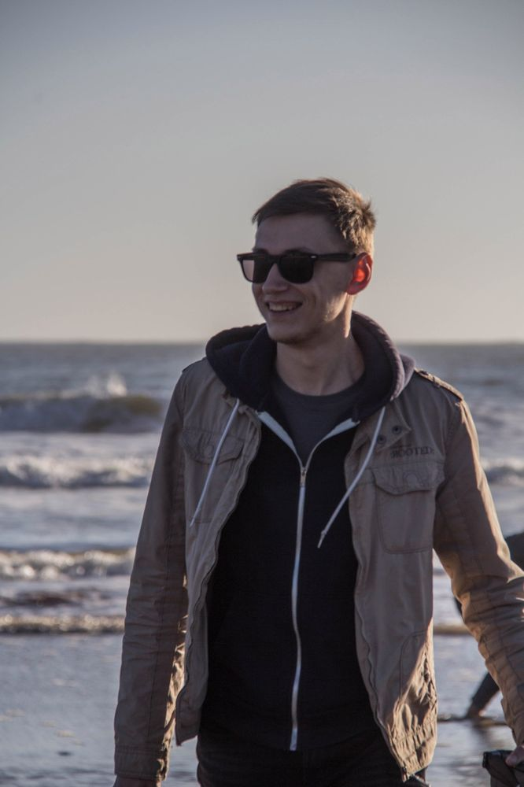

I am a talented, dedicated, professional and creative software engineer with 8+ years of professional experience in web development field. A dynamic, result-oriented, focused leadership to manage software projects with remote team of programmers, designers and editors. Successful in team environment and as an independent developer.
2017 – now
Yelp Inc.
San-Francisco, CA
Software Developer
2014 – 2017
Yelp Eat24
San-Francisco, CA
Web Developer
Responsible for developing Corporate Ordering web application using AngularJS and Bootstrap frameworks. Developing and maintaining online chat support system including backend and frontend architectures. Maintaining internal web-applications. Backend development of web and API services.
2014
Eat24
San-Bruno, CA
Web Developer
Responsibilities include UI development in support of various web applications, taking designs and turning them into fully functional, standards compliant, cross-browser HTML templates. Heavy use of HTML, CSS and JavaScript to enhance the user experience, lots of jQuery and Mootools. Developing of client side and internal web-applications using AngularJS framework. Back-end development using PHP and PostgreSQL.
2009 - 2014
Eat24 Remotely
Ukraine
Full Stack Web Developer
2006 – 2009
TSK Games Studio
Melitopol, Ukraine
Founder
Responsibilities include Front-end web development (HTML, CSS, JavaScript) on currently active projects, Game Engine programming. Team management.
Adobe Photoshop, Adobe Illustrator, CMS integration, Web Standards and Accessibility, Cross-Browser Compatibility, Mobile Web and Application Design
Web DevelopmentHTML
JavaScript
PHP
CSS / LESS / Sass CSS Preprocessors
AngularJS / jQuery / JavaScript / Mootools
Bootstrap / Semantic UI
GraphQL / Relay / React
NodeJS / Express
MySQL, PostgreSQL, MongoDB, CouchDB
Software developmentPython, C#, C++, Java